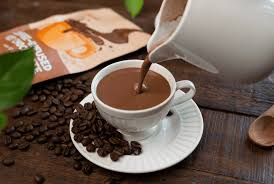

Coffee

Description
Coffee is your best friend when pulling an all nighter, today let's learn how to make this magical drink.
Ingredients
- Coffee poweder
- Milk
- Sugar
- Chocolate poweder.(optional)
- Put 250 ml milk on the stove.
- Add 1 tablespoon of sugar.
- Add coffee according to your preference.
- Add 1 tablespoon of chocolote powder.(optional)
- When it starts rising, turn off the stove and pour it in a glass. Enjoy😉
Home